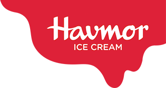

Established in the year 1944 and now a part of LOTTE Wellfood Co. Ltd., Havmor has grown to be loved by all. But how did we do it? Well! We are present in every nook and corner around the nation with 72,000 retail outlets and over 250 flagship stores. This network spans across 21 states and 4 union territories.
With our committed team and the latest technology in the industry, we produce over 4 million litres of ice cream, that approx 36 million units of ice cream served to consumers every single day. That’s a lot of ice cream! While delivering this huge quantity, we never compromise on quality. Our products undergo stringent quality checks that adhere to global quality standards.
We are also proud to tell you about our list of esteemed clients which includes the Indian Institute of Management - Ahmedabad and renowned hotels like Taj, Le Meridian, ITC, Hyatt, Four Seasons, Fortune Landmark, Radisson, Marriott, and Crowne Plaza, to name a few.

We carry innovation in our hearts, coming up with unique flavours for you to experience. It’s the essence of every creation. From traditional recipes like Kulfis to modern favourites like Belgian Dark Chocolate and Hazelnut Ice Cream Cake, our portfolio boasts of 150+ products and speaks for our wide range. Signature tubs, ice candies, crunchy cones, you name it and we have it!
Oh! And here’s something we are super proud of!
We have 10 consecutive wins at the Times Food Awards since 2009 in our kitty!
LOTTE Wellfood Co. Ltd., Korea, the parent company of Lotte Group, opened its doors in 1967 and swiftly solidified its reputation as a leader of Korea’s food industry. LOTTE Wellfood Co. Ltd. enjoys leadership status in gums, candies, biscuits, chocolates and ice cream in Korea. Juicy Fresh, Spearmint, Freshmint chewing gums and Ghana Chocolates have served as long-time favorites for over four decades. Xylitol chewing gum continues to grow strong since its launch - thanks to its ability to reduce risk of tooth decay. To this end, it has been adding new business lines in the domestic market, growing existing business while actively participating in the overseas markets.